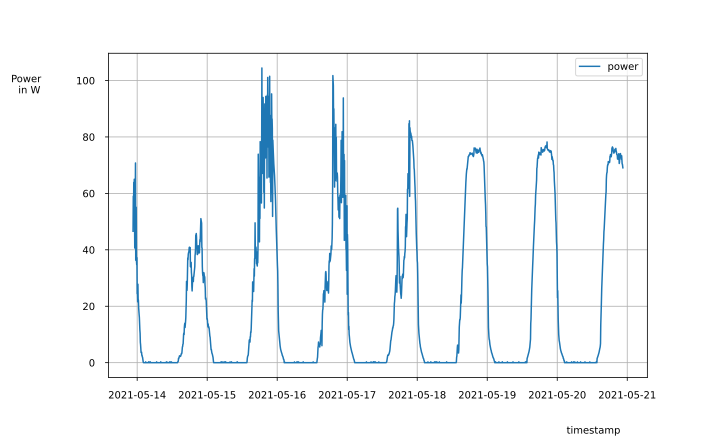
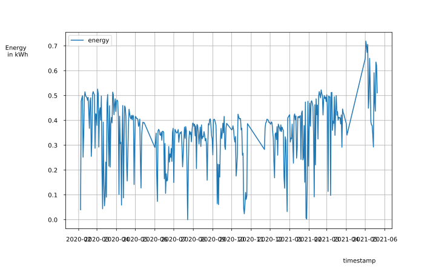
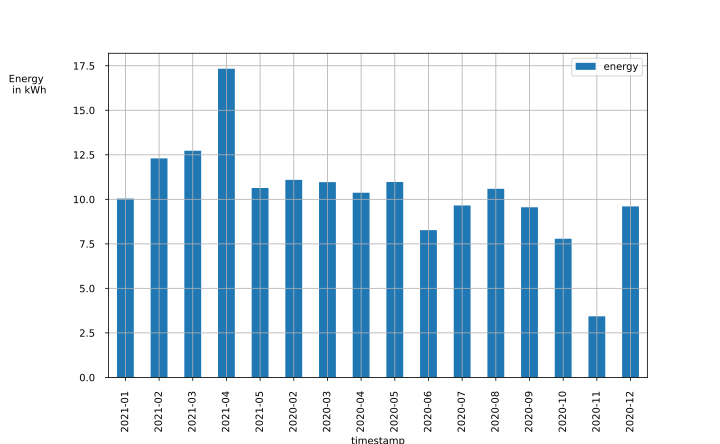
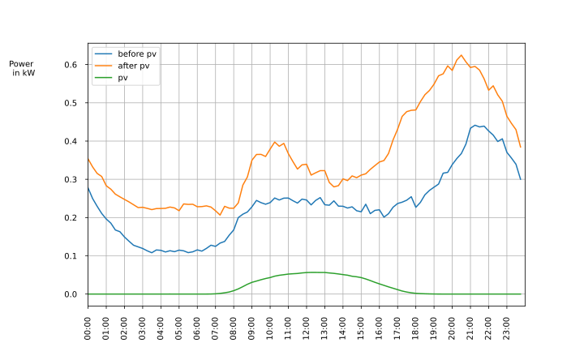
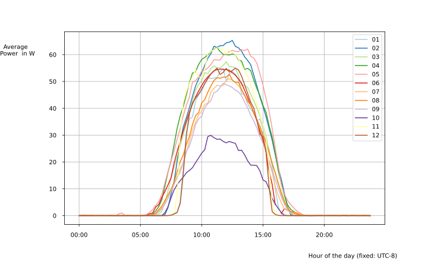
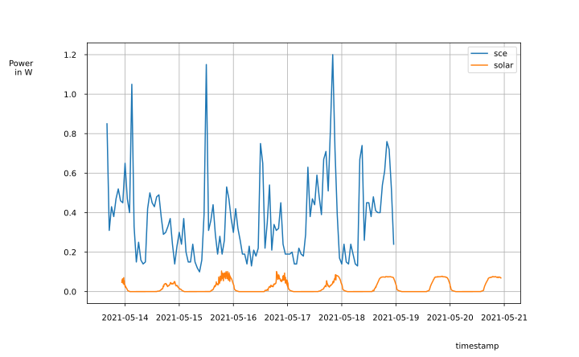
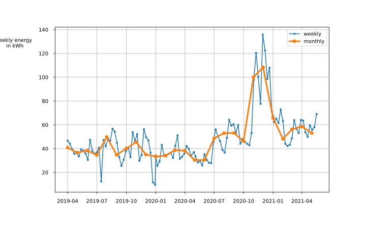
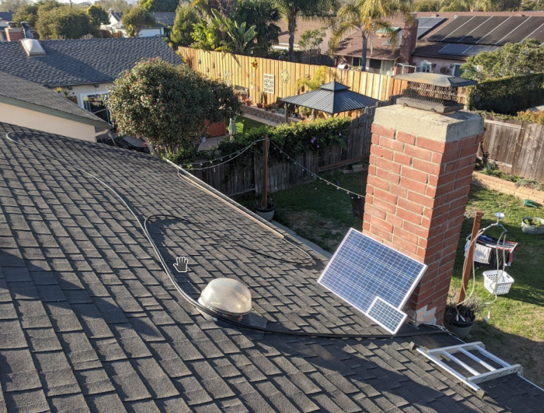

HolyRomanPV
Current Power
69.1 W (updated at 2021-05-20 15:30:05.361545-07:00)
Avg daily production
0.36 kWh
Avg daily cons before PV (2020-02-01)
5.56 kWh
Avg daily cons after PV (2020-02-01)
7.74 kWh
Self Consumption Rate
99.0 %
Production

Daily Production

Monthly Production

Average Production and Consumption

Monthly Comparison

Production and Consumption
Latest data: 2021-05-18 23:00:00

Consumption history
Latest data: 2021-05-18 23:00:00

System
